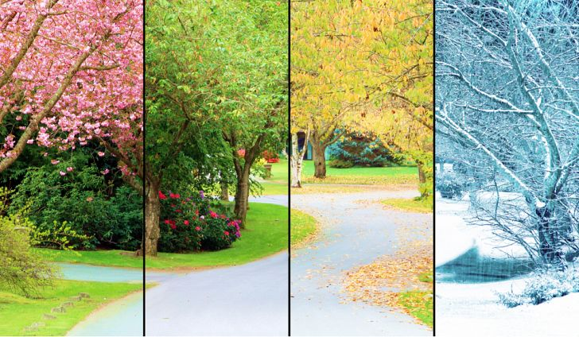

Going through the seasons.

By clicking on the links above one can navigate through the four seasons. Each page is dedicated to one of the four seasons: fall, winter, spring, and summer. On each page there will be some information on that specific season. Montana is one of those states that gets to experience all four. Even though most of the time the winters can run a little long.